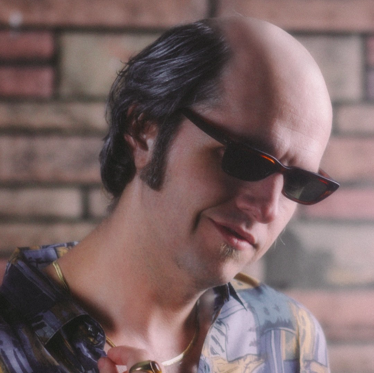

Sir Alan Frisbee is an enigma of the analog age, a singular voice in American music whose story is stranger than fiction.
Born in a one-room shack in Raccoon, Kentucky, Alan arrived unexpectedly moments after his twin brother, Rick. As their grandmother led a Sacred Harp chorus around the birthing bed, Alan crowned, woven into music from the moment he was born.
By age five, Alan stunned the region by winning the Cream of Kentucky Holler Yodeling Competition, defeating 40-year-old ten-time champion Rondey “The Throat” McClucky. He remains the youngest winner on record.
The sons of famed fiddler Fiddlin’ Frank Frisbee, Alan and Rick traveled the bluegrass circuit as children, eventually forming Fiddlin’ Frank and the Frisbee Family Band with their mother, Ethel.
It was during these years that Alan met Dan Child, a prodigious young slide guitarist. The two quickly bonded over a love of folk, bluegrass, and early rock and roll, and soon formed The Pelts with Rick on drums.
Their raw sound caught fire. In the late 1970s, The Pelts toured the U.S., Europe, Japan, and South America, opening for acts like ELO, The Doobie Brothers, and Tom Petty. They even briefly shared a bill with the Grateful Dead—where Rick infamously leapt into the crowd mid-show and assaulted a fan with a drumstick.
Behind the scenes, tensions mounted. Substance abuse took its toll, particularly on Rick. In 1980, after a disastrous show in Lima, Peru, a drunken altercation between Rick and Dan ended in tragedy: Dan Child fell from a balcony to his death. Rick was arrested for manslaughter, and The Pelts dissolved overnight.
Reeling from the loss, Alan attempted to launch a solo career, but media coverage of the trial overshadowed his efforts. One evening, distracted by a scathing review, he fell into an open manhole.
The accident left him partially deaf—able to hear only one frequency: 432 Hz, the so-called “frequency of healing.” Alan retreated to the Abbey of Gethsemani, living among Trappist monks for nearly a decade. There, pilgrims sought him out, believing his trance-like hums carried mystical powers. It is rumored a woman missing a toe grew a new one after receiving a blessing from Alan, though no formal documentation exists.
One morning, Alan miraculously regained full hearing and declared himself “back in the game.” Through the early 1990s, he recorded a series of solo albums that, while critically overlooked, cemented his status as a cult figure.
In the late ’90s, Alan was knighted by the King of Cronk and Bronk Islands in a private ceremony, earning the title Sir Alan Frisbee, which he has used ever since.
Today, Sir Alan claims many distinctions: the first man to sing falsetto in rock, the true originator of the “dudun” guitar line in *Jack & Diane*, and the only musician to conduct album releases entirely by fax. He remains defiantly analog in a digital world, a living relic of a weirder, wilder era.
Alan does not use computers. This site was originally built by second cousin Tom Diskiss, a fan and reluctant webmaster, who only agreed to hand over the domain after Alan showed up to a family reunion in 2004. Tom still updates the site today, under Alan's supervision — which is mostly done by fax.